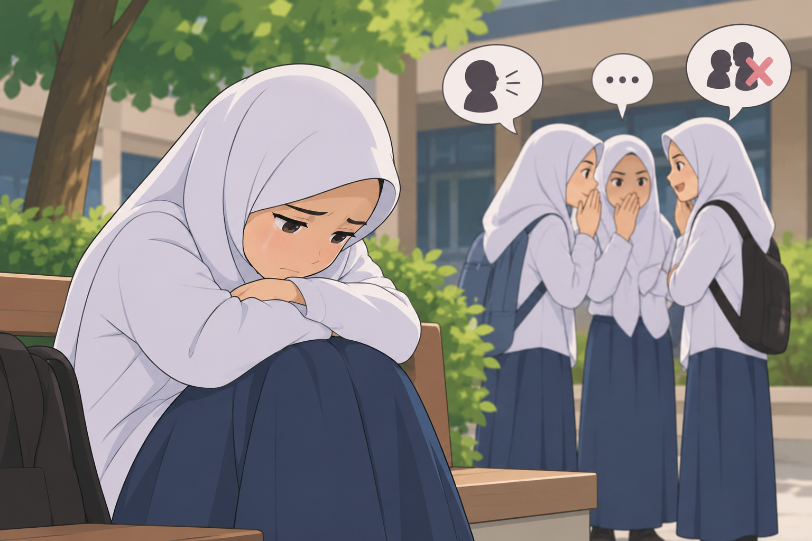
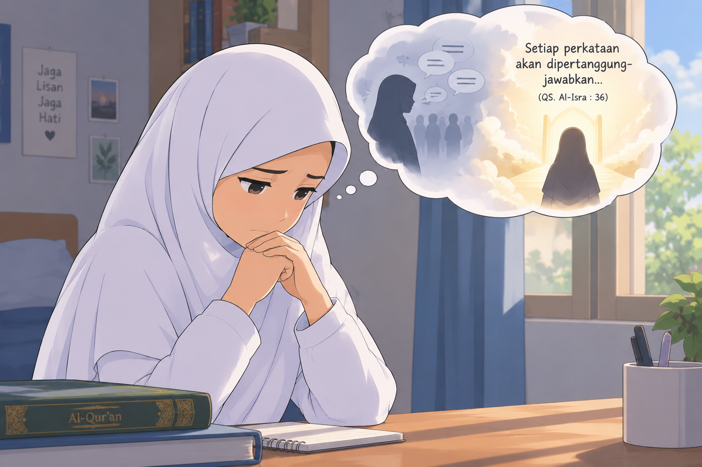
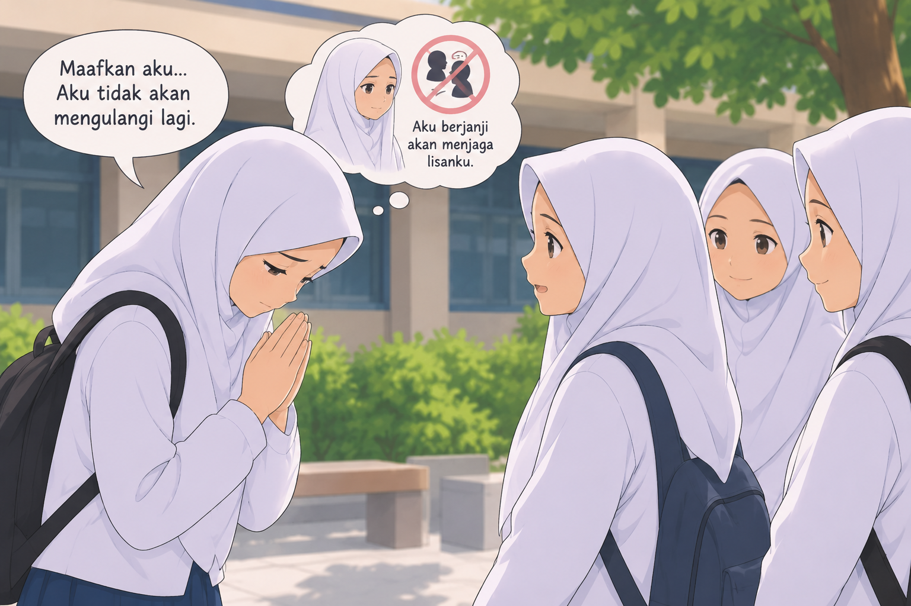
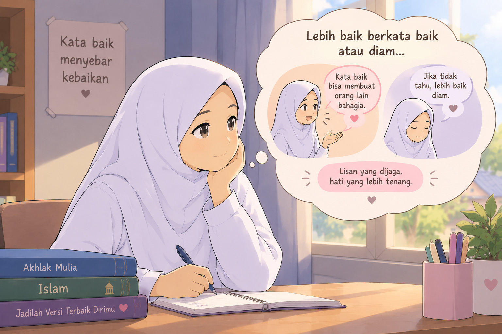

masuk neraka karena lisan







🥀 LISAN YANG MEMBAWA PETAKA
Di sebuah sekolah, ada seorang siswi bernama Aisyah. Ia pintar, tetapi suka mengejek dan membicarakan keburukan teman-temannya. Suatu hari, Aisyah menyebarkan berita buruk tentang sahabatnya sendiri. Akibatnya, sahabatnya sedih dan dijauhi oleh teman-teman yang lain. Namun, Aisyah justru menganggapnya sebagai candaan. Lama-kelamaan, teman-teman Aisyah mulai menjauhinya juga. Ia merasa kesepian dan mulai menyesali perbuatannya. Aisyah kemudian teringat bahwa setiap perkataan akan dipertanggungjawabkan di hadapan Allah. Ia takut dosa lisannya menjadi sebab datangnya azab Allah. Akhirnya, Aisyah meminta maaf kepada orang-orang yang telah disakitinya. Ia berusaha berhenti bergosip dan mulai membiasakan diri berkata baik. Pesan Moral: Jagalah lisan kita, karena perkataan yang buruk bisa menyakiti hati orang lain dan mendatangkan dosa. Biasakan berkata baik atau diam. Hadis: “Barang siapa beriman kepada Allah dan hari akhir, hendaklah ia berkata baik atau diam.” (HR. Bukhari dan Muslim)